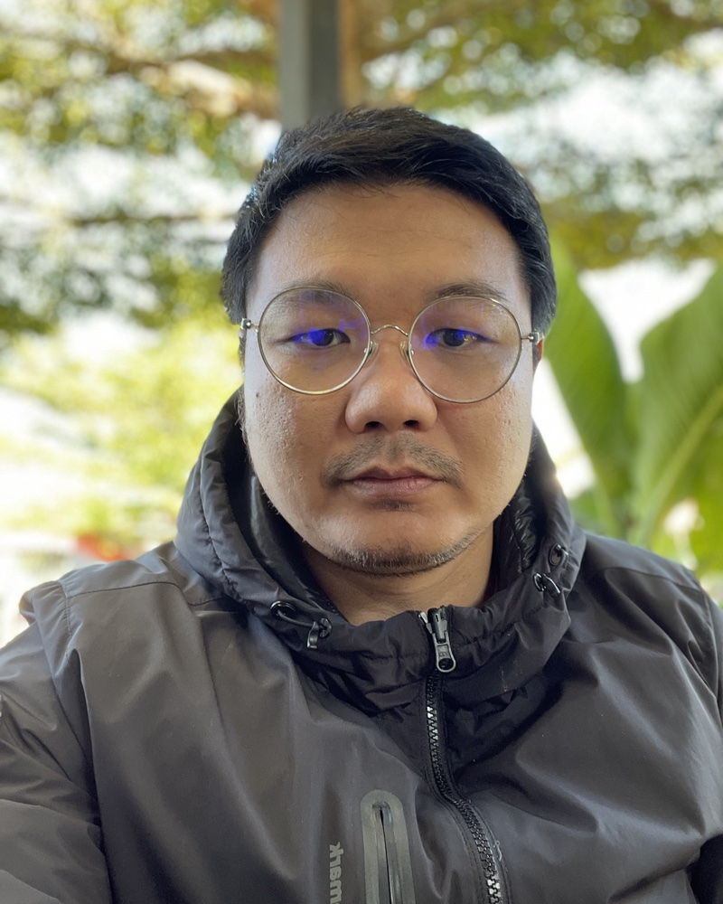

Wichukorn DandechaSystems & Security Analyst.
I run identity, security operations and private cloud for a university of 20,000+ users, including Microsoft 365, Google Workspace and 250+ WordPress sites, from the first alert to the closed case.
ดูแล identity, งาน security operations และ private cloud ของมหาวิทยาลัยที่มีผู้ใช้กว่า 20,000 คน รวมถึง Microsoft 365, Google Workspace และเว็บไซต์ WordPress กว่า 250 เว็บ ตั้งแต่ alert แรกจนถึงการปิดเคส

CySA+ · PenTest+ · CEH ● on-callBehind the alert triage
เบื้องหลังการคัดกรอง alert
A simulation of the pipeline in production. Everything in this window is generated for the portfolio, not live data.
ภาพจำลองของ pipeline ที่ใช้งานจริง ข้อมูลในหน้าต่างนี้สร้างขึ้นเพื่อประกอบ portfolio ไม่ใช่ข้อมูลสด
Systems I build and run
ระบบที่สร้างและดูแลอยู่จริง
Each case study covers the problem, the approach, measurable outcomes and lessons learned.
แต่ละ case study เล่าปัญหา แนวทาง ผลลัพธ์ที่วัดได้ และสิ่งที่ได้เรียนรู้
SOC triage pipeline
Wazuh, FortiWeb and M365 alerts flow through Shuffle to Cortex, which checks each IOC against several threat intel sources. An on-prem LLM drafts an advisory summary before the case opens in DFIR-IRIS, cutting manual alert sorting.
เชื่อม alert จาก Wazuh, FortiWeb และ M365 ผ่าน Shuffle ให้ Cortex ตรวจ IOC กับ threat intel หลายแหล่ง แล้วให้ LLM ภายในองค์กรสรุปเคสเป็นข้อเสนอแนะก่อนเปิดใน DFIR-IRIS ลดงานคัด alert ด้วยมือ
Unified SSO with Entra ID
Moving university applications onto Entra ID over OIDC with enforced MFA, and designing an on-prem secondary IdP for cloud outages.
รวมการยืนยันตัวตนของแอปในมหาวิทยาลัยไปที่ Entra ID ผ่าน OIDC พร้อมบังคับ MFA และกำลังออกแบบ IdP สำรอง on-prem สำหรับกรณีคลาวด์ล่ม
DevSecOps deployment pipeline
Every new system gets its production server and pipeline from me. Moved deploys from webhooks to GitHub Actions on self-hosted runners for 7 frameworks, with CodeQL, Dependabot, deploy gates, rollback snapshots and post-deploy health checks.
ทุกระบบใหม่ผมติดตั้ง production server และทำ pipeline ให้ ย้ายการ deploy ขึ้น production จาก webhook ไปเป็น GitHub Actions บน self-hosted runner ครอบคลุม 7 framework พร้อม CodeQL, Dependabot, ด่านยืนยันก่อน deploy, snapshot สำหรับ rollback และ health check หลัง deploy
High-availability exam platform
Online exams on Moodle with 4 load-balanced web nodes, a Redis cache, MaxScale and a 7-node MariaDB cluster, kept separate from the e-Learning platform (5 web nodes, Redis, shared storage).
ระบบสอบออนไลน์บน Moodle ที่ทำ load balance 4 web node พร้อม Redis cache, MaxScale และ MariaDB cluster 7 node แยกจากระบบ e-Learning (5 web node, Redis, shared storage)
Kubernetes web hosting platform
Planned rebuild of web hosting on an on-prem HA Kubernetes cluster: 30+ web systems and the new Moodle behind the WAF, with a separate Moodle node pool and GitHub Actions deploys where build is split from deploy.
แผนยกเครื่อง web hosting ขึ้น Kubernetes แบบ HA บนเครื่องของเราเอง เว็บ 30+ ระบบและ Moodle ใหม่อยู่หลัง WAF มี node pool แยกให้ Moodle และ deploy ด้วย GitHub Actions ที่แยก build ออกจาก deploy
University AI Gateway
University-wide AI service with Microsoft 365-only sign-in, self-service API keys and usage monitoring; local models are unlimited and external models are capped at 100k tokens a day. Local models (Qwen ×3 load-balanced, Typhoon, GLM, Foundation-sec) run on 2 servers with 6 NVIDIA L40S GPUs, with OpenRouter for external models when needed.
บริการ AI สำหรับทั้งมหาวิทยาลัย login ด้วย Microsoft 365 เท่านั้น สร้าง API key ได้เอง และ monitor การใช้งาน โมเดลในองค์กรใช้ได้ไม่จำกัด ส่วนโมเดลภายนอกจำกัดวันละ 100k token โมเดลในองค์กร (Qwen ×3 แบบ load balance, Typhoon, GLM, Foundation-sec) รันบน server 2 เครื่อง NVIDIA L40S 6 ใบ และใช้ OpenRouter สำหรับโมเดลภายนอกเมื่อจำเป็น
Post-quantum admin VPN
A dedicated OpenVPN for administrators with hybrid ML-KEM key exchange, separate from the university-wide user VPN.
OpenVPN สำหรับผู้ดูแลระบบโดยเฉพาะ ใช้ hybrid key exchange แบบ ML-KEM และแยกจาก VPN ที่ใช้ทั้งมหาวิทยาลัย
Work across the whole stack
งานที่ครอบคลุมทั้ง stack
Computer System Analystเจ้าหน้าที่วิเคราะห์ระบบงานคอมพิวเตอร์
- Run the virtualization estate for ~20,000 users across VMware vSphere (ESXi, vCenter), Nutanix HCI and several Proxmox VE clusters, with backup on Synology Active Backup for Business and Proxmox Backup Server.
- Built the SOC triage pipeline and wired threat intelligence into alerting.
- Run Sangfor Cyber Command (NDR) and Sangfor EDR agents end to end: agent rollout, console administration, alert investigation and response, and coordinating remediation with the departments that own the servers.
- Administer Active Directory on Windows Server, Microsoft 365 and Google Workspace: accounts, security policies and detection of account attacks.
- Operate email security gateways (Proxmox Mail Gateway, FortiMail, Trend Micro Deep Discovery Email Inspector) filtering spam, phishing and malware, with logs fed into Wazuh.
- Operate the FortiWeb WAF that fronts every server under the university's WAF-first policy: per-application policies, false-positive tuning and Wazuh detection rules for web attacks.
- Run the university's two Moodle platforms: the online exam system on 4 load-balanced web nodes with a Redis cache, MaxScale and a 7-node MariaDB cluster, and the e-Learning system on 5 web nodes with its own Redis and shared storage. A full rebuild on Kubernetes is planned for this fiscal year.
- Run three CMS (Contest Management System) grader instances for the academic olympiad programme at Walailak University: one for the university and one each for two partner schools, kept separate.
- Maintain 250+ university WordPress sites: updates, hardening and incident response.
- Still build systems, now with AI-assisted development in Laravel and .NET Core, including automated account provisioning that creates each new user in Active Directory through a .NET Core API and in Google Workspace at the same time.
- Run the university's web hosting, and for every newly developed system set up its production server end to end on Ubuntu Server: provisioning, hardening and a deployment pipeline before go-live.
- Co-led the move of production deployments from webhooks to GitHub Actions on self-hosted runners across PHP (Laravel, Yii2, Yii1, CodeIgniter 2), Python, Next.js and .NET Core, owning security and operations: CodeQL, Dependabot and npm audit, least-privilege tokens, deploy confirmation and locks, rollback snapshots, zero-downtime reloads and post-deploy health checks.
- Expanding SSO and designing a secondary IdP for service continuity.
- Deployed and operate the university-wide AI platform (LiteLLM, vLLM, LibreChat) with Microsoft 365-only sign-in, self-service API keys, a 100k-token daily cap on external models and university-wide usage monitoring; local models (Qwen ×3 load-balanced, Typhoon, GLM, Foundation-sec) on 2 servers with 6 NVIDIA L40S GPUs, plus external models through OpenRouter, including procurement and technical specifications.
- ดูแลระบบ virtualization สำหรับผู้ใช้ราว 20,000 คน ทั้ง VMware vSphere (ESXi, vCenter), Nutanix HCI และ Proxmox VE หลาย cluster พร้อมระบบ backup ด้วย Synology Active Backup for Business และ Proxmox Backup Server
- พัฒนา SOC triage pipeline และเชื่อม threat intelligence เข้ากับการแจ้งเตือน
- ดูแล Sangfor Cyber Command (NDR) และ EDR agent ของ Sangfor ครบวงจร ตั้งแต่ติดตั้ง agent ดูแล console ตรวจสอบและรับมือ alert จนถึงประสานงานกับหน่วยงานเจ้าของ server ให้แก้ไขเมื่อพบภัยคุกคาม
- ดูแลระบบ Active Directory บน Windows Server, Microsoft 365 และ Google Workspace ของมหาวิทยาลัย ทั้งบัญชีผู้ใช้ นโยบายความปลอดภัย และการตรวจจับการโจมตีบัญชี
- ดูแล email security gateway หลายผลิตภัณฑ์ ได้แก่ Proxmox Mail Gateway, FortiMail และ Trend Micro Deep Discovery Email Inspector (DDEI) กรอง spam, phishing และ malware ก่อนถึงกล่องจดหมาย และส่ง log เข้า Wazuh
- ดูแล WAF (FortiWeb) ซึ่งเป็นด่านหน้าตามนโยบายที่ทุก server ต้องวางอยู่หลัง WAF ทั้งการตั้ง policy ต่อระบบ ปรับลด false positive และเขียน rule ใน Wazuh เพื่อตรวจจับการโจมตีเว็บ
- ดูแลระบบ Moodle 2 ระบบของมหาวิทยาลัย ได้แก่ ระบบสอบออนไลน์ที่ทำ load balance บน web server 4 node พร้อม Redis cache, MaxScale และ MariaDB cluster 7 node และระบบ e-Learning บน web server 5 node พร้อม Redis และ shared storage ของตัวเอง ปีงบประมาณนี้มีแผนยกเครื่องใหม่ทั้งระบบบน Kubernetes
- ดูแลระบบ CMS grader (Contest Management System) ของงานโอลิมปิกวิชาการ มหาวิทยาลัยวลัยลักษณ์ 3 ระบบ แยกเป็นของมหาวิทยาลัย 1 ระบบ และของโรงเรียน 2 ระบบ
- ดูแลเว็บไซต์ WordPress ของหน่วยงานกว่า 250 เว็บ ทั้งการอัปเดต hardening และการรับมือเมื่อถูกโจมตี
- ยังพัฒนาระบบอยู่ โดยใช้ AI ช่วยพัฒนา (Laravel, .NET Core) เช่น ระบบสร้างบัญชีผู้ใช้อัตโนมัติ ที่สร้าง user บน Active Directory ผ่าน API ที่เขียนด้วย .NET Core และสร้าง user บน Google Workspace ไปพร้อมกัน
- ดูแล web hosting ของมหาวิทยาลัย และเมื่อมีการพัฒนาระบบใหม่ จะติดตั้ง production server (Ubuntu Server เป็นหลัก) ให้ครบวงจร ตั้งแต่ติดตั้ง hardening จนถึงทำ deployment pipeline ก่อนขึ้นใช้งานจริง
- ร่วมย้ายการ deploy ขึ้น production server จาก webhook ไปเป็น GitHub Actions บน self-hosted runner ครอบคลุม PHP (Laravel, Yii2, Yii1, CodeIgniter 2), Python, Next.js และ .NET Core รับผิดชอบด้าน security และ operation: CodeQL, Dependabot และ npm audit, สิทธิ์ token ขั้นต่ำ, ยืนยันและกันการ deploy ซ้อน, snapshot สำหรับ rollback, reload แบบไม่มี downtime และ health check หลัง deploy
- ขยาย SSO และออกแบบ IdP สำรองเพื่อความต่อเนื่องของบริการ
- ติดตั้งและดูแลแพลตฟอร์ม AI สำหรับทั้งมหาวิทยาลัย (LiteLLM, vLLM, LibreChat) login ด้วย Microsoft 365 เท่านั้น สร้าง API key ได้เอง จำกัดโมเดลภายนอกวันละ 100k token ต่อคน และ monitor การใช้งานได้ทั้งมหาวิทยาลัย โมเดลในองค์กร (Qwen ×3 แบบ load balance, Typhoon, GLM, Foundation-sec) บน server 2 เครื่อง NVIDIA L40S 6 ใบ และโมเดลภายนอกผ่าน OpenRouter รวมถึงงานจัดซื้อและเอกสารข้อกำหนด
Computer System Analystเจ้าหน้าที่วิเคราะห์ระบบงานคอมพิวเตอร์
- Developed university information systems in ASP.NET (VB.NET, C#) and PHP, mainly on CodeIgniter 2.
- Designed and maintained MySQL, MariaDB and Oracle databases.
- พัฒนาระบบสารสนเทศของมหาวิทยาลัยด้วย ASP.NET (VB.NET, C#) และ PHP โดยใช้ CodeIgniter 2 เป็นหลัก
- ออกแบบและดูแลฐานข้อมูล MySQL, MariaDB และ Oracle
Tools I use every day
เครื่องมือที่ใช้งานประจำ
Detection & SOC
- Wazuh
- Sangfor Cyber Command
- FortiWeb
- MISP
- OpenCTI
- Cortex
- Shuffle
- DFIR-IRIS
Identity & Email
- Active Directory
- Microsoft Entra ID
- Microsoft 365
- Google Workspace
- OIDC / SAML
- Proxmox Mail Gateway
- FortiMail
- Trend Micro DDEI
Infrastructure & DevSecOps
- VMware vSphere
- Nutanix HCI
- Proxmox VE
- Synology Active Backup for Business
- Proxmox Backup Server
- Ubuntu Server
- Windows Server
- MariaDB cluster / MaxScale
- Redis
- GitHub Actions
- CodeQL / Dependabot
Platforms
- LiteLLM / vLLM
- LibreChat
- WordPress + WP-CLI
- Moodle
- CMS grader
- Laravel
- .NET Core
Verifiable certifications
ใบรับรองที่ตรวจสอบได้
Click a card to verify the badge on Credly.
กดที่การ์ดเพื่อตรวจสอบ badge บน Credly
Let's talk systems
and security
คุยเรื่องระบบ
และความปลอดภัย
Happy to exchange notes on SOC automation, identity and running infrastructure in higher education.
ยินดีแลกเปลี่ยนเรื่อง SOC automation, identity และการดูแลโครงสร้างพื้นฐานในสถาบันการศึกษา
Send email ↗ส่งอีเมล ↗